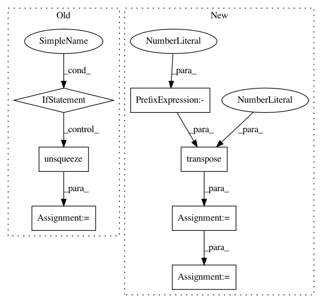

2ffbfa3a6bd3b8de8e21a762489346054dcd9ccc,nussl/separation/deep/deep_mask_estimation.py,DeepMaskEstimation,extract_features,#DeepMaskEstimation#,53
Before Change
input_data = self._preprocess()
with torch.no_grad():
features = self.model(input_data)
if "estimates" not in features:
raise ValueError("This model is not a mask estimation model!")
features = (
(features["estimates"] + 1e-6) /
(input_data["magnitude_spectrogram"].unsqueeze(-1) + 1e-6)
).squeeze(0)
features = features.permute(3, 1, 0, 2)
features = features.data.cpu().numpy()
return features
def run(self, features=None):
After Change
embedding = output["embedding"]
// swap back batch and sample dims
if self.metadata["num_channels"] == 1:
embedding = embedding.transpose(0, -2)
embedding = embedding.squeeze(0).transpose(0, 1)
return embedding.cpu().data.numpy()
In pattern: SUPERPATTERN
Frequency: 3
Non-data size: 7
Instances
Project Name: interactiveaudiolab/nussl
Commit Name: 2ffbfa3a6bd3b8de8e21a762489346054dcd9ccc
Time: 2020-03-12
Author: prem@u.northwestern.edu
File Name: nussl/separation/deep/deep_mask_estimation.py
Class Name: DeepMaskEstimation
Method Name: extract_features
Project Name: cornellius-gp/gpytorch
Commit Name: a7a12d157766b69cf4b1ddbb5fcdacfe485dc6fa
Time: 2019-04-03
Author: gpleiss@gmail.com
File Name: test/kernels/test_scale_kernel.py
Class Name: TestScaleKernel
Method Name: test_ard_batch
Project Name: cornellius-gp/gpytorch
Commit Name: a7a12d157766b69cf4b1ddbb5fcdacfe485dc6fa
Time: 2019-04-03
Author: gpleiss@gmail.com
File Name: test/kernels/test_rbf_kernel.py
Class Name: TestRBFKernel
Method Name: test_ard_batch